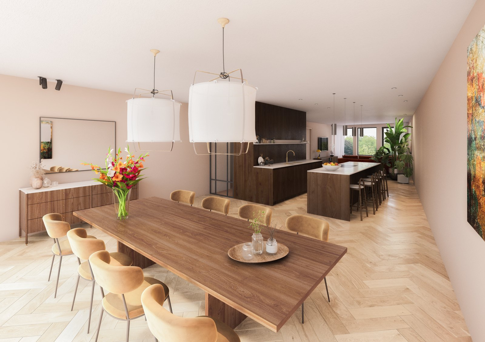

← Terug naar projecten
Transformatie & optopping — in ontwikkeling
Utrechtseweg 178, Oosterbeek
Transformatie van een woning boven een winkelpand aan de Utrechtseweg in Oosterbeek, in opdracht van 026Vastgoed. Er is een extra bouwlaag onder de kap gerealiseerd en aan de achterzijde is uitgebouwd. Hierdoor zijn drie appartementen ontstaan voor de leeftijdsgroep 55+.



Uw project
Benieuwd wat PM|AD voor u kan betekenen?
Elk project begint met een goed gesprek.